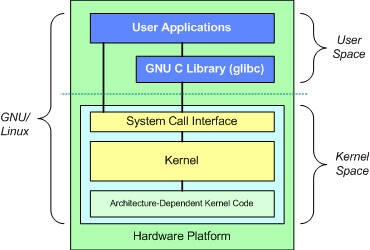
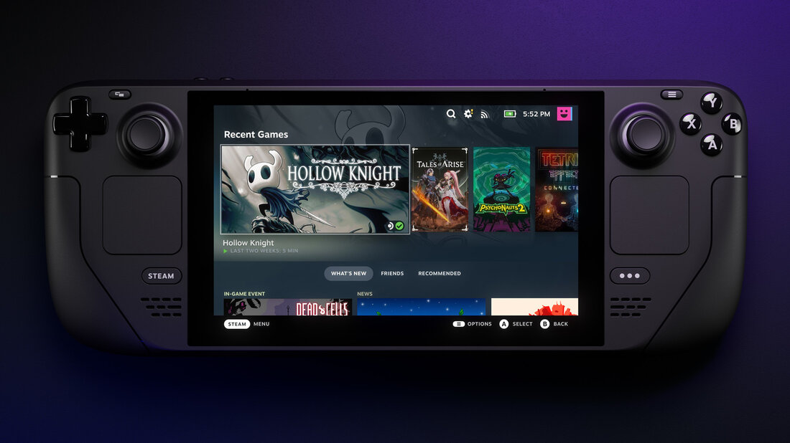

Linux
What is Linux?
Linux is a free and open-source operating system* (OS) that powers everything from personal computers to
smartphones, servers, and even supercomputers. Originally created by Linus Torvalds in 1991,
Linux has
evolved into a powerful and versatile platform used by millions of people worldwide.
Unlike proprietary operating systems like Windows or macOS, Linux is open-source, meaning anyone can
view, modify, and distribute its code. This collaborative nature has led to a rich ecosystem of Linux
distributions, each tailored for different types of users.
*Linux is technically not an operating system (OS) on its own—rather, it is the Kernel of an OS.
The kernel is the core part of an operating system, responsible for managing hardware resources and
allowing
software to interact with the computer's hardware. It handles crucial functions such as memory
management, task scheduling, and input/output operations.

When we refer to “Linux” as an operating system, we're usually talking about a Linux distribution. A
Linux distribution bundles the Linux kernel together with other essential software (like the GNU Core Utilities, package
managers, graphical user interfaces and more) to form a complete operating system.
These distributions are what users typically interact with when using “Linux.”
On this website, the term "Linux" is used for Linux distributions, while the term "Linux kernel" is
used when we are talking about the kernel specifically.
What is Linux used for?
Linux is an incredibly versatile operating system that powers a wide range of devices and platforms,
from tiny embedded systems to powerful supercomputers. Its adaptability and open-source nature have led
to widespread adoption across several key sectors:
-
Servers and Cloud Infrastructure
One of the most significant use-cases of Linux is in servers. In fact, the vast majority of web servers that power the internet, run on Linux. Popular server distributions like Ubuntu Server, CentOS, and Debian are used by companies, governments, and organizations worldwide to host websites, applications, and services
Linux's stability, security, and resource efficiency make it the preferred choice for server environments. Additionally, its compatibility with tools like Apache, Nginx, and Docker has solidified its position as the backbone of modern cloud infrastructure, with major platforms like AWS, Google Cloud, and Microsoft Azure offering Linux-based solutions for their customers.
-
Android and Mobile Devices
You may not realize it, but if you're using an Android smartphone, you're actually using Linux! Android, developed by Google, is built on the Linux kernel, which allows it to manage hardware resources efficiently on mobile devices.
While Android's user interface and software stack are quite different from traditional desktop Linux distributions, its foundation is rooted in the same Linux kernel used in servers and desktop systems. This has enabled Android to become the most widely used mobile operating system in the world.
Beyond smartphones, Linux also powers many other embedded systems—from smart TVs (many of which use Android) to IoT devices and even automotive systems in modern cars.
There are also projects like Ubuntu Touch and PostmarketOS, which aim to create complelety Linux-based mobile phone operating systems.
-
The Growing Desktop Market
Although Linux has long dominated servers and embedded systems, it's increasingly gaining traction in the desktop market. While it only occupies a small percentage of total desktop users compared to Windows and macOS, Linux's desktop presence is growing steadily.
Linux distributions like Linux Mint, Ubuntu, and ZorinOSoffer user-friendly environments that make it easier for everyday users to switch from proprietary operating systems. With advancements in software compatibility, including tools like Wine and Proton (which allow running Windows applications and games), Linux is becoming a more viable option for developers, gamers, and general users alike.
The open-source nature of Linux gives desktop users unparalleled customization options, making it a great choice for people who value privacy, control, and flexibility. Additionally, the development of powerful, lightweight desktop environments like Gnome, KDE Plasma, and Xfce allows Linux to run efficiently on both new and older hardware.
Valve and the Steam Deck: Gaming on Linux
One of the most exciting developments for Linux in recent years has been its growing presence in the gaming industry, largely thanks to Valve and their Steam Deck. Valve, the company behind the popular gaming platform Steam, has long been an advocate for Linux, and their efforts have significantly improved gaming on the platform.
Valve's major contribution to gaming on Linux is Proton, a compatibility layer that allows many Windows games to run on Linux. Proton enables Linux users to access a large portion of Steam's vast game library without needing to run Windows.
In 2021, Valve released the Steam Deck, a handheld gaming console which is designed to bring PC gaming on the go, and its default operating system, SteamOS, is a Linux distribution.
Valve's investment in Linux through Proton and the Steam Deck has helped change the perception that Linux is not suitable for gaming. By creating a smooth gaming experience on a Linux-based system, Valve has pushed Linux gaming forward, inspiring more developers to consider supporting Linux natively.
